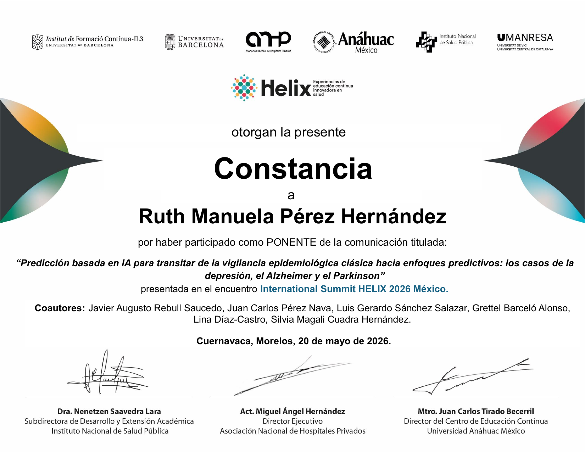
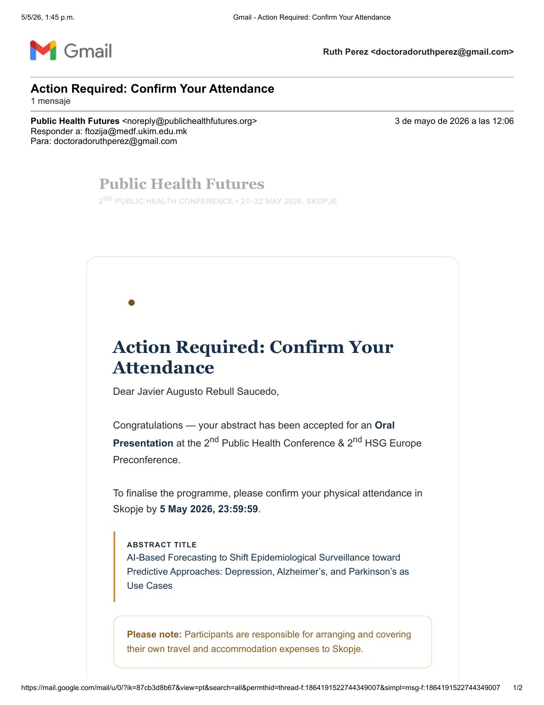

El proyecto EpiForecast-MX obtuvo el primer lugar en el International Summit HELIX 2026 México. La Dra. Ruth Manuela Pérez Hernández y Juan Carlos Pérez Nava expusieron en Cuernavaca el enfoque del equipo: usar inteligencia artificial para transitar de la vigilancia epidemiológica clásica hacia un modelo predictivo, con la depresión, el Alzheimer y el Parkinson como casos de uso.
El International Summit HELIX 2026 México es un encuentro internacional dedicado a la innovación, el liderazgo y la educación continua en el sector salud. Reúne a líderes, investigadores, instituciones y profesionales de México y América Latina para debatir, innovar y cocrear el futuro de la salud, la educación y la tecnología sanitaria. Su edición mexicana se celebró del 19 al 22 de mayo de 2026, con sedes en el Instituto Nacional de Salud Pública (INSP) en Cuernavaca y en la Universidad Anáhuac México, campus Norte.
Lo organizan instituciones de primer nivel en salud y educación: la Asociación Nacional de Hospitales Privados (ANHP), la Universidad Anáhuac México, el Instituto Nacional de Salud Pública, UManresa (Universitat de Vic - Universitat Central de Catalunya), el Institut de Formació Contínua IL3 y la Universitat de Barcelona. La edición previa del Summit (HELIX 2025, en Cataluña) reunió a más de 300 profesionales de 24 países.
Importa porque es un foro donde la educación en salud se encuentra con la inteligencia artificial, la simulación y las tecnologías emergentes, y porque sus iniciativas se orientan a un impacto tangible en los sistemas de salud, alineadas con los Objetivos de Desarrollo Sostenible (ODS 3 salud y bienestar, ODS 4 educación de calidad y ODS 17 alianzas). Que un proyecto estudiantil de pronóstico epidemiológico obtenga el primer lugar en este escenario valida tanto su rigor técnico como su pertinencia para la salud pública.
Las corrientes que están transformando la educación y la práctica en salud a nivel global.
Casos reales que muestran resultados medibles en los sistemas de salud.
Una red de instituciones de México, América Latina y Europa.
Proyectos e iniciativas diseñados para resolver retos concretos de salud.
La comunicación presentada por el equipo se tituló "Predicción basada en IA para transitar de la vigilancia epidemiológica clásica hacia enfoques predictivos: los casos de la depresión, el Alzheimer y el Parkinson". La idea central de EpiForecast-MX es dar el salto de una vigilancia que describe lo que ya ocurrió a una que anticipa la incidencia semanal por entidad federativa, con un horizonte de 52 semanas y varios motores de pronóstico (Prophet, DeepAR, Ensemble y Stacking) trabajando en conjunto.
Expuso el proyecto ante el Summit y recibió la constancia oficial de ponente del encuentro, en representación del equipo.
Acompañó la presentación en Cuernavaca, exponiendo el enfoque técnico de inteligencia artificial detrás del pronóstico.
La constancia oficial del International Summit HELIX 2026 México acredita la participación del equipo como ponente, con la firma de las instituciones organizadoras. Junto a ella, el mismo trabajo recibió una segunda validación internacional: su aceptación como ponencia oral en la 2nd Public Health Conference de Skopje. Haz clic en cualquiera de los documentos para ampliarlos.


En paralelo al primer lugar en HELIX, el enfoque de EpiForecast-MX fue aceptado como ponencia oral en la 2nd Public Health Conference (con la 2nd HSG Europe Preconference), celebrada en Skopje, Macedonia del Norte, el 21 y 22 de mayo de 2026. La versión internacional del trabajo se titula "AI-Based Forecasting to Shift Epidemiological Surveillance toward Predictive Approaches: Depression, Alzheimer's, and Parkinson's as Use Cases".
Que la misma propuesta sea reconocida con el primer lugar en México y aceptada para presentación oral en Europa, en la misma semana, confirma que el problema que aborda EpiForecast-MX (anticipar la carga de enfermedades de alto impacto para apoyar la planeación de los servicios de salud) es relevante más allá de las fronteras nacionales.
Sitios oficiales de los congresos donde se reconoció el trabajo.